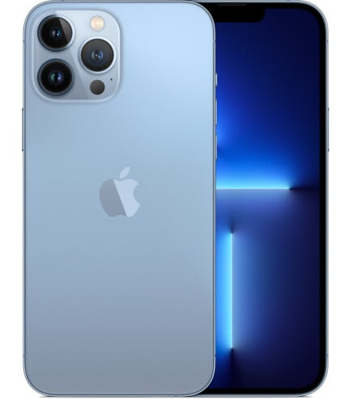

- Ціна: 50 000
- Колір: Блакитний

iPhone 13 Pro Max об'єднує потужну систему камер, найшвидший чіп для iPhone A15 Bioniс, ємну батарею зі збільшеним робочим ресурсом, надійну систему безпеки, приголомшливий дисплей з частотою оновлення до 120 Гц. І все це укладено в міцному корпусі з захистом за стандартом IP68.
Фірмовий дизайн iPhone доступний в чотирьох розкішних кольорах на будь-який смак. Корпус з хірургічної нержавіючої сталі доповнений суперміцною передньою панеллю Ceramic Shield і фактурним матовим склом задньої панелі. Стандарт захисту від пилу і вологи IP68 дозволяє пережити екстрені ситуації без наслідків.
Удосконалена система камер Pro забезпечує нові можливості для початківців і просунутих фотографів. Завдяки покращеній апаратній частині кожна фотографія містить більше деталей. А інтелектуальне програмне забезпечення забезпечує доступ до нових і вдосконалених старих режимів і функцій.
Тепер нічний режим доступний для будь-якої камери: ширококутна камера вловлює в 2.2 рази більше світла, а надширококутна - на 92% більше світла при зйомці фото і відео. Будь-яке нічне фото, будь то портрет або панорама, виходить приголомшливо чітким і яскравим.
Частота оновлення зображення на дисплеї Super Retina XDR з адаптивною технологією ProMotion автоматично змінюється в діапазоні від 10 до 120 Гц в залежності від того, в якому режимі використовується iPhone 13 Pro Max. З урахуванням неймовірної графічної продуктивності 5-ядерного графічного процесора на базі чіпа A15 Bioniс ви отримуєте серйозний пристрій для активних геймерів.